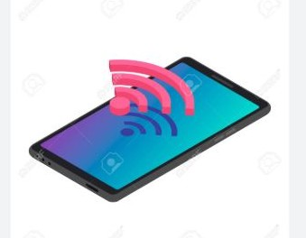

Ressentez les battements du cœur de ceux qui comptent pour vous, où que vous soyez...
Une expérience unique au-delà des distances
Qu'est-ce que Coeur Linker ?
Dans un monde où la distance peut séparer les êtres chers, Cœur Linker réinvente la connexion émotionnelle en permettant de ressentir en temps réel les battements du cœur d'un proche.
Que vous soyez en relation à distance, parent éloigné de votre enfant, ou que vous souhaitiez simplement garder un lien fort avec une personne chère, Cœur Linker vous permet de rester connecté émotionellement avec vos proches.
Comment ça fonctionne ?
-
Un capteur cardio connecté mesure les battements cardiaques
-

Une application mobile intuitive récupère les données de battements cardiaques en temps réel
-
Un dispositif récepteur reproduit les battements cardiaques en temps réel
Nos produits

La bague Coeur Linker Conçue pour être confortable et légère, cette bague est fabriquée avec des matériaux haut de gamme, offrant à la fois durabilité et esthétisme. Elle permet à votre moitié de ressentir vos battements vos battements où qu'elle soit, créant ainsi un lien émotions puissant à traverser la distance. Que vous soyez séparés par quelques kilomètres ou des milliers, la bague CoeurLinker vous permet de faire battre votre amour au même rythme.

La peluche Coeur Linker Grâce à une technologie Bluetooth innovante, la peluche est connectée à un émetteur porté par votre moitié. Chaque battement de son cœur est fidèlement retransmis à la peluche, qui active un mécanisme interne simulant ces pulsations.